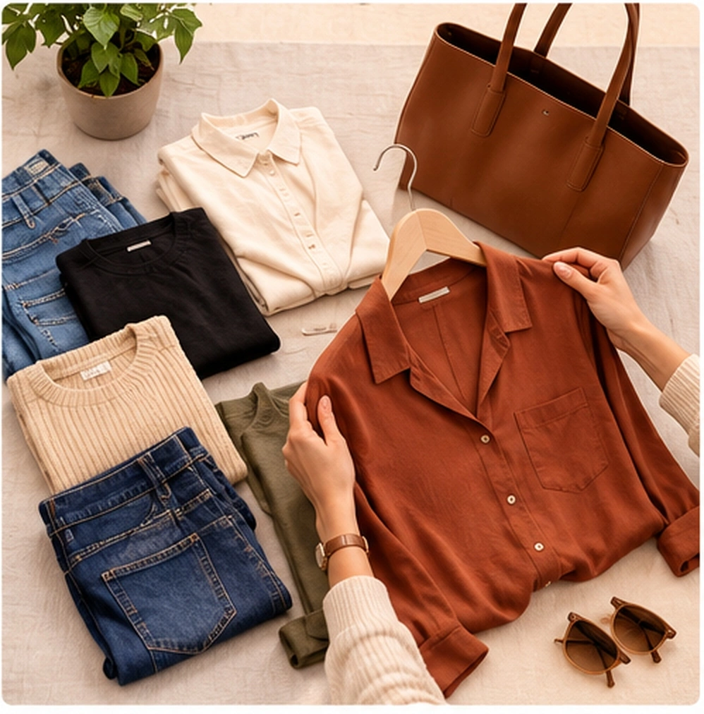

The Smart Shopping Journey
A Great Piece Isn't Always a Great Purchase
You see a shirt, jacket, trouser, or pair of shoes that looks great on its own. You buy it. Then a few weeks later, it sits unworn because of these five common issues:
COLOUR CLASH
It doesn't work with my existing colours.
TOO SIMILAR
I already own something like it.
NOT VERSATILE
I don't have enough ways to wear it.
WARDROBE MISMATCH
It doesn't work with the rest of my closet.
REGRET
I like it now, but may not wear it later.
What Is "Scan Before You Buy"?
Scan Before You Buy helps you evaluate a potential clothing or accessory purchase against your existing wardrobe, colour profile and style context before deciding whether to buy it.
How It Works
Four steps stand between "I like this" and "I should buy this."
CHOOSE THE ITEM
Take a photo or add the item you are considering.
CHECK WARDROBE
Compare it with what you already own and relevant colour/style context.
UNDERSTAND THE FIT
Understand how the item may work with your wardrobe, colours and available combinations.
MAKE YOUR DECISION
Buy it, skip it, or look for a better option.
Your Wardrobe Is the Context
Scan Before You Buy becomes more useful once Colourity knows what you already own.
Haven't built your wardrobe yet? Start with Digital Wardrobe →
Evaluate a Garment Against Your Existing Closet
Before buying a new shirt or saree online or in-store, evaluate it with Colourity. The app checks whether the new item fits your colour profile and how it relates to pieces you already own—potential combinations, colour relationships, and closet overlap.
The question this answers isn't "does this look good on its own?" but "will this work with what I already own?"
- ✓ Skin tone colour compatibility
- ✓ Style & formality matching
- ✓ Integration with existing tops & bottoms
- ✓ Realistic wear frequency evaluation
How Many Outfits Can This New Piece Unlock?
A good purchase should expand your wardrobe possibilities. A single versatile piece that pairs with multiple garments you already own gives you far more useful outfit options than an isolated impulse buy.
Evaluate the new item based on the outfits you can create with clothes you already own.
Shop the Gap
Sometimes the right purchase is not the most exciting piece—it is the piece that fills a genuine wardrobe gap.
EXAMPLE
You already have: Navy trousers, white shirt, brown shoes — but lack a versatile jacket.
Shop the Gap: Identifies the missing piece type and colour, generating a search link to real retailers for that exact item.
Search links point to Myntra, Ajio, Amazon, and Flipkart. Colourity is not a marketplace—it generates live searches on established retailers.
Shop Complete Look + Shop Similar
Shop Complete Look
See the complementary pieces needed to create the outfit and generate retailer searches for those items.
Shop Similar
Explore alternatives that may work better with your wardrobe when the original item is not ideal.
Keep Track of Your Shopping Decisions
Past decisions give you valuable context for future decisions. Shopping History keeps a record of your past Scan Before You Buy checks, so evaluating a purchase becomes part of an ongoing shopping strategy.
A Practical Example
1. SHOPPING INPUTS
Considering Item: Navy Blazer
Existing Wardrobe:
- • White Shirt
- • Khaki Chinos
- • Brown Loafers
2. EVALUATION OUTCOME
Does the new blazer work with what I already own?
Strong Wardrobe Compatibility + Multiple Outfit Combinations = Potentially Useful Purchase
Note: This is an illustrative shopping scenario demonstrating system logic—not a static guarantee for every wardrobe.
More Considered Purchase Decisions
The goal is NOT to stop shopping. The goal is to shop with better context.
A useful purchase should ideally:
- ✓ Work with your existing wardrobe
- ✓ Be wearable in multiple situations
- ✓ Add something meaningful to your closet
- ✓ Reduce unnecessary duplication

The Connected Colourity Ecosystem
Scan Before You Buy fits into a complete personal styling system:
1. YOUR COLOURS
Know which colours suit your skin tone →
2. YOUR WARDROBE
Know what clothes you already own →
3. SCAN BEFORE BUY
Know whether new items fit before buying
4. OUTFIT PLANNER
Know what to wear every day →
Shopping Evaluation FAQs
Scan Before You Buy helps you evaluate a potential clothing or accessory purchase against your existing wardrobe, colour profile and style context before deciding whether to buy it.
You photograph or share a product photo of a potential purchase into Colourity. The AI compares it with your saved digital wardrobe inventory and skin tone colour palette to determine compatibility, versatility, and potential outfit pairings.
Yes. Scan Before You Buy evaluates whether a new garment pairs with items you already own, showing you possible outfit combinations before you spend money.
Colourity checks colour harmony with your skin tone profile, formality matching with your closet, versatility across multiple outfits, and whether the item overlaps with something you already own.
Yes. It surfaces potential outfit combinations built by combining the new item with garments currently in your digital wardrobe.
By evaluating colour compatibility, versatility, and existing closet overlap before purchasing, Scan Before You Buy gives you clear context so you can make more considered purchase decisions.
If a look is missing a piece, Shop the Gap can generate a live search link to real retailers for the exact type and colour of item needed.
Colourity generates search links to Myntra, Ajio, Amazon, and Flipkart. Colourity is not a marketplace—it points you to live search results on these platforms.
Related Masterclass Guides
Make Smarter Shopping Decisions Today
Download Colourity on Android to get started for free.
Get Colourity App